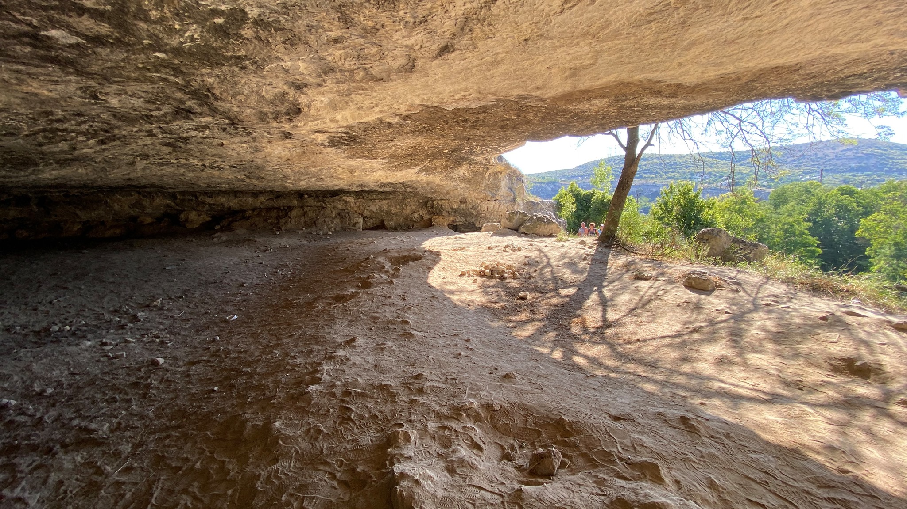

Заметки для будущих покорителей Крыма из автопутешествия по Крыму
Карты принимают почти везде, кроме совсем рынков. Переводы «на Сбербанк» тоже в ходу. Нельзя рассчитаться телефоном. Потому что ApplePay и GooglePay не работают. Говорят, есть МирПэй, но я такого не знаю.
Интернет отличный, покрытие хорошее.
С основной Россией связь платная, интернет в роуминге дорогой, поэтому сразу нужно купить сим-карту.
Два тарифа для «отпускников»: 350 — обычный 850 — с возможностью делиться трафиком. Возможность делиться нужно будет руками прописать на телефоне. Не все продавцы умеют это. UPD: “Вин-мобайл тариф с шерингом, 100 рублей в неднлю инет анлим”
Брендов нет. Нет российских банков, торговых сетей, автодилеров, общепита. Это никак не влияет ни на что.
Бензин дороже на рубля на три. Перед въездом в Крым народ заливается как в последний раз. Но на весь Крым уйдёт бака полтора, поэтому смысла тратить время в очереди я не вижу.
Народу много. С палаткой легко встаётся. Околоморские посёлки напоминают Яровое. Я Яровое не люблю, но не осуждаю.
Букинг не работает. Санкции. Ровно до тех пор пока ты не поставишь галочку «я путешествую по работе», тогда санкций нет.
Как в анекдоте про еврея: иду по улице, гляжу валяется доллар, а сегодня суббота, Шаббат — работать нельзя, поднимать доллар тоже. Я начал молиться богу, и, о чудо, — воскресенье!
И удивление года.
На пересечение Крыма поперёк ушло время ровно между завтраком и обедом. И в мою голову закрались смутные сомнения — ведь Крым на карте выглядит ого-го, большой как моё эго.
Полез в Википедию — так и есть. Крым, на минуточку, в почти ТРИ С ПОЛОВИНОЙ РАЗА МЕНЬШЕ Кузбасса (который и сам невелик).